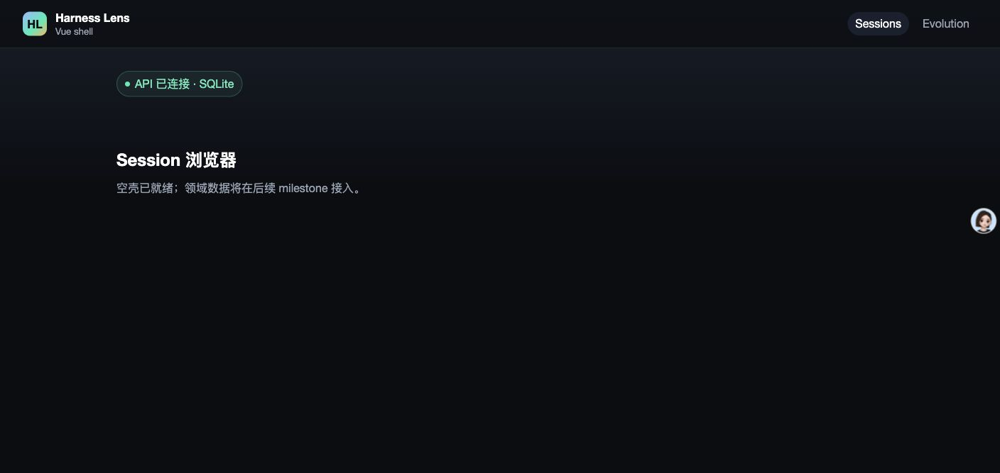
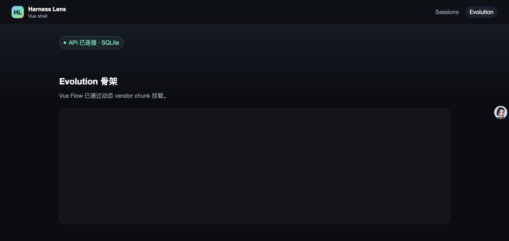

- Issue
- #29 · M1 identity backend
- PR
- #75
- Commit
- 4548576
- Runtime
- FastAPI + Vite + Chrome
- Database
- SQLite smoke instance
Harness Evolution · PR #75
M1-06 身份后端集成冒烟报告
在真实 Chrome、Vite 与 FastAPI 进程上验证应用启动、导航、API 连通与身份主链路。所有必测场景通过，浏览器控制台无 warning 或 error。
9冒烟场景
9通过
0控制台告警/错误
67API 自动测试通过
Environment and Artifact
2026-10-25 · macOS · Chrome · localhostScenario Matrix
9 pass| # | 场景 | 结果 | 观测 | 证据 |
|---|---|---|---|---|
| 01 | Sessions 启动 | PASS | Vue 壳渲染，顶部导航与空态可见。 | screenshots/01-sessions-empty.png |
| 02 | 后端健康连通 | PASS | 页面显示“API 已连接 · SQLite”，health 返回 200。 | screenshots/01-sessions-empty.png HTTP health=200 |
| 03 | Evolution 导航 | PASS | 路由切换成功，Vue Flow 骨架挂载。 | screenshots/02-evolution-empty.png |
| 04 | Sessions 返回导航 | PASS | 返回后 URL、标题与空态保持正确。 | screenshots/03-sessions-return.png |
| 05 | 浏览器控制台 | PASS | 导航前后 error/warning 日志均为空。 | Chrome dev logs count=0 |
| 06 | 登录换取 token | PASS | 真实 HTTP 登录返回 200，mustChangePassword=true。 | HTTP login=200 · mustChange=true |
| 07 | 422 密码脱敏 | PASS | 超长密码返回 422，响应不回显提交的明文。 | HTTP overlongPassword=422 · leaksInput=false |
| 08 | 相同密码拒绝 | PASS | 新旧密码相同返回 422；业务 API 仍被 PASSWORD_CHANGE_REQUIRED 阻止。 | HTTP samePassword=422 · users=403 PASSWORD_CHANGE_REQUIRED |
| 09 | 改密、刷新与 admin API | PASS | 不同新密码改密 204，refresh 200，admin 用户列表 200。 | HTTP changePassword=204 · refresh=200 · users=200 |
Issues and Observations
No defects foundNo defects were found.
Evidence
3 screenshots


Automated Coverage Assessment
4 areas reviewed| 区域 | 覆盖 | 结论 | 建议 |
|---|---|---|---|
| 身份 API | API 自动测试 + 真实 HTTP | 登录、改密、refresh、admin 边界、并发重放和脱敏均有自动证据。 | 保持 CI 中的 API、SQLite 与 MySQL lane。 |
| 双方言迁移 | SQLite 本地 + MySQL CI | 当前 PR 的 MySQL CI 已通过。 | 后续 schema 变更继续双库执行。 |
| 浏览器壳 | Computer Use 实机 | 启动、导航、API 连接和控制台清洁已确认。 | m1-07 接入登录 UI 后扩充登录/改密浏览器场景。 |
| 身份前端 | 不在 m1-06 范围 | 登录页与路由守卫属于 m1-07；本报告用真实 HTTP 验证后端交付。 | m1-07 完成后增加浏览器级鉴权回归。 |
Conclusion
通过当前提交的 M1-06 后端与现有 Web 壳在真实进程中协同正常，未发现集成缺陷。
- 浏览器控制台无 warning/error。
- 真实 HTTP 身份主链路与安全回归全部通过。
- 登录 UI 尚未实现，浏览器级鉴权回归留给 m1-07。
证据源：Computer Use 截图、Chrome 控制台、脱敏 HTTP 结果与自动测试。生成 HTML 不应手改。